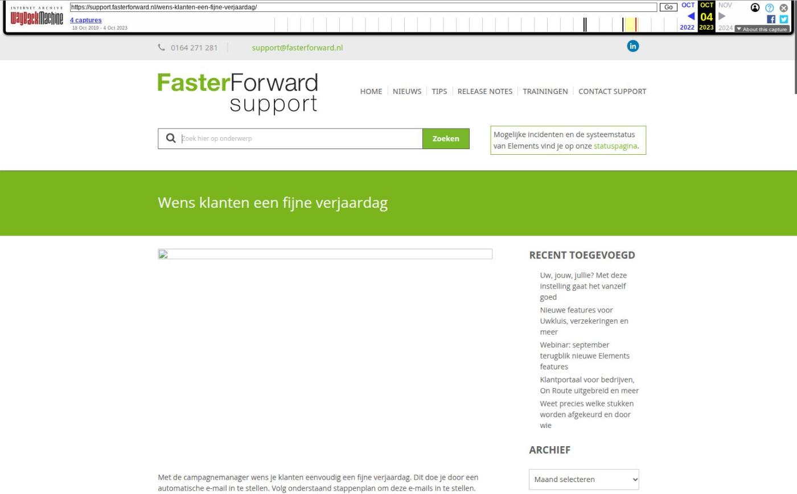

Gemakkelijk indexeren, uitnodigingen accepteren/afwijzen en meer

Tekstinhoud
Op woensdag 11 september zijn Elements en eBlinqx weer verbeterd en uitgebreid met nieuwe features. Deze release bevat onder andere historie mutatievoorstellen terugkijken, bankafschriften importeren uitgebreid en uitbreidingen OcktoID.
Gemakkelijk diensten en contracten indexeren
Uitnodigingen accepteren of afwijzen
Historie mutatievoorstellen terugkijken
Uitbreidingen OcktoID
OcktoID Uwkluis
Identificatie via Ockto
Opslaan boekstukken verbeterd
Bankafschriften importeren uitgebreid
Geboortedatum Fastlane
Aplaza berichten automatisch verwijderen achter recht
Documenten per product kunnen afschermen
Overige verbeterpunten
Gemakkelijk diensten en contracten indexeren
Via SMART kan je nu gemakkelijk de prijs van meerdere contracten en/of diensten in één keer aanpassen. Zo hoef je bij een indexatie niet meer door middel van een script de prijzen in de producten aan te laten passen. In de SMART selectie 'Indexeren diensten en contracten' worden alle diensten opgehaald die een dossiersysteemstatus en offertesysteemstatus 'Lopend' hebben. Hier filter en selecteer je de producten waarvan je de prijs wilt aanpassen. Door middel van de actie 'Indexeer producten' kan je aangeven of de bedragen aangepast moeten worden met een vast bedrag of dat zij aan de hand van een percentage verhoogd dienen te worden. Na het uitvoeren van de actie wordt de verkoopprijs in het dossier geïndexeerd. In het dossier komt een laatste indexatiedatum en registratie te staan. Daarnaast kan je vanuit SMART direct een campagne opstellen om zo de klanten te informeren dat de prijs is geïndexeerd. Let op: in Beheer – Productbeheer dien je handmatig zelf de prijs onder het product aan te passen. Doe je dit niet dan krijgen nieuw aangemaakte producten alsnog de oude prijs.
Hier lees je meer over het indexeren van contracten en diensten.
Uitnodigingen accepteren of afwijzen
Vanaf nu krijgt de verzender van de uitnodiging vanuit Elements en eBlinqx een bericht of je de uitnodiging accepteert of afwijst. Middels de e-mail ontvang je de uitnodiging en je opent jouw agenda. Vervolgens kies je voor 'Accepteren' of 'Afwijzen'. De verzender van de uitnodiging krijgt via de e-mail bericht van jouw keuze en bij 'Accepteren' wordt de afspraak direct in jouw agenda ingepland.
Historie mutatievoorstellen terugkijken
Vanaf nu kan je in verwerkte mutatievoorstellen terugzien hoe het mutatievoorstel vóór het gekozen mutatievoorstel eruit zag. Dit geeft meer inzicht in de historie van de polis. In de pop-up zie je het laats verwerkte mutatievoorstel vóór het gekozen mutatievoorstel, het gekozen mutatievoorstel en indien gewenst de huidige polis (deze kan je aan- of uitvinken). Onder het gekozen mutatievoorstel worden de velden gearceerd die verschillend zijn met het laatst verwerkte mutatievoorstel. Deze aanpassing staat niet in de conflict pop-up.
Uitbreidingen OcktoID
OcktoID Uwkluis
Sinds kort wordt in de brondata die je ophaalt met Ockto het Ockto ID meegestuurd. Dit gebeurt vanaf nu ook wanneer de journey opstart vanuit Uwkluis. Bij binnenkomst van het ODM bericht wordt dan automatisch het klantonderzoek bijgewerkt. Hierin komt het soort 'Indentificatie/verificatie' te staan met daarbij het resultaat 'Goed' en bron 'Ockto'.
Identificatie via Ockto
Het is nu ook mogelijk om jouw klant via Ockto te identificeren zonder dat de klant de gehele Ockto journey hoeft te doorlopen. De identificatie kan je starten per dossier via de klantonderzoek-tabel. In een volgende release wordt het mogelijk om meerdere dossiers tegelijk via SMART te identificeren.
Opslaan boekstukken verbeterd
Er worden nu duidelijke foutmeldingen getoond wanneer het systeem het boekstuk niet kan opslaan. Zo is er een aparte foutmelding als er sprake is van een verschil in het boekstuk en een algemene melding voor andere fouten in het boekstuk. Op deze manier is het direct duidelijk dat het boekstuk niet wordt opgeslagen en kan je dit meteen corrigeren.
Bankafschriften importeren uitgebreid
Vanaf nu ondersteunen wij ook de nieuwe standaard voor bankbestanden, namelijk CAMT.053. De Regiobank werkt met dit type bestand. Op deze manier kan je zowel MT940 als CAMT.053 bestanden inlezen om de bankafschriften te importeren in eBlinqx en Elements.
Geboortedatum Fastlane
Voor het maken van berekeningen in Fastlane is de geboortedatum van belang. Vanaf nu tonen we in het tabblad Fastlane een oranje melding als bij één van de personen die wordt meegestuurd naar Fastlane geen geboortedatum staat ingesteld. Zo word je erop geattendeerd dat de geboortedatum niet wordt meegestuurd met het verzoek deze alsnog in te vullen. De melding is niet blokkerend.
Aplaza berichten automatisch verwijderen achter recht
Enige tijd geleden is het mogelijk gemaakt om Aplaza correspondentieberichten automatisch door het systeem te laten verwijderen. Iedereen die toegang heeft tot de Aplaza-inbox kan dit instellen. Vanaf nu staat dit achter een recht, zodat de beheerder kan bepalen wie hier wel of geen toegang tot heeft. Let op: het recht staat nu voor iedereen aan die toegang heeft tot de Aplaza inbox. Mocht je dit anders willen stuur dan een e-mail naar een support@fasterforward.nl met daarin de gebruikers die het mogen instellen. Dan zetten we het recht voor de andere gebruikers uit.
Documenten per product kunnen afschermen
Vanaf nu is het mogelijk om documenten die gekoppeld zijn aan een bepaald product af te schermen voor gebruikers. Dit door middel van rechten. Middels deze rechten kan je het zo instellen dat de gebruiker bijvoorbeeld wel het hypotheekproduct in kan zien, maar niet de documenten die hieraan gekoppeld zijn. Wil je, als beheerder, dat bepaalde gebruikers documenten gekoppeld aan een product niet kunnen zien? Stuur dan een e-mail naar opdrachten@fasterforward.nl.
Overige verbeterpunten
Het tabblad Uwkluis onder het tabblad Export is wat naar voren geplaatst, zodat je sneller op dit tabblad kunt klikken
Er verschijnt nu een melding als de e-mail te groot is om volledig gedownload of weergegeven te worden. Dit voorkomt dat het e-mailproces vastloopt
De inkoopfactuur kan worden verwijderd, zolang de inkoopfactuur niet is geboekt (status Nieuw) of de boeking van de inkoopfactuur is verwijderd
Naast de roepnaam worden nu ook de volledige voornamen geëxporteerd naar Findesk
Foutief gemarkeerde ADN posten worden nu, in de batch, ook in de controlelijst getoond
Het icoon om PDF's samen te voegen is verduidelijkt
Er is een nieuwe rapportage toegevoegd, namelijk Conversie – Dossierlijst. Aan de rapportage CRM – WWFT check zijn de kolommen Producttypes en Risico toegevoegd. Wil je deze rapportage en kolommen zien, zet ze dan aan in Rapportagebeheer
Onder het tabblad Schademelding – Documenten zijn de filters 'Naam', 'Soort documenten' en 'Document tonen: alle of 2 jaar' toegevoegd. Via de filters kan je gemakkelijk het gewenste document erbij zoeken
Geplaatst op 6 september 2024
Laatste 5 releasenotes
Verbeteringen onder de motorkap en gespreksopnames »
HDN release: afscheid van HDN certificaten »
Verbeterde verwerking van grote e-mailvolumes via Office 365 en voorbereiding HDN »
Nu zelf schade- en levensverzekeringen omnummeren »
Verbeteringen onder de motorkap en type documenten gecontroleerd »